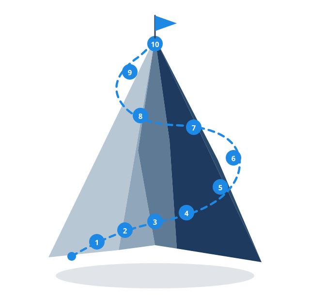

PyPath
A winding trail through Python — ten stops, one destination.
Write real code in your browser. Scroll the path below to walk every unit from foundations to certification.
Scroll to draw the trail

The path
Ten units as stops on one line. As you scroll, the trail draws itself — and each stop lights up when the line arrives.
Run Python where you learn it
No install, no setup. Lessons ship with a live editor — try a snippet, see the output, keep moving.
Output
Press Run or ⌘↵ to see output
Built by a student, for students
A free path from first program to certification prep — made by someone still on the trail.

Adam Issac
Founder
Ready to walk the path?
Ten units. Browser-native Python. Nothing to install — just start at the trailhead.